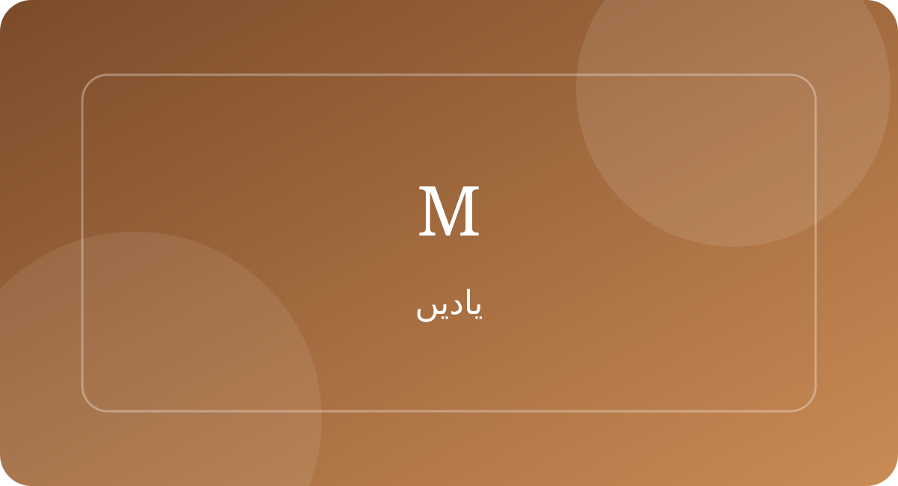

پرانی یادیں
وہ پرانی گلیاں اور بچپن کی شامیں
مٹی کی خوشبو، گلی میں کھیلتے بچے اور مغرب سے پہلے گھر لوٹنے کی آوازیں—بچپن کی کچھ شامیں آج بھی دل میں زندہ ہیں۔
پرانی یادوں سے تاریخ اور دلچسپ حقائق تک، اپنی پسند کی تحریر پڑھیں۔

مٹی کی خوشبو، گلی میں کھیلتے بچے اور مغرب سے پہلے گھر لوٹنے کی آوازیں—بچپن کی کچھ شامیں آج بھی دل میں زندہ ہیں۔
ایک وقت تھا جب گھر کا ریڈیو پورے خاندان کو ایک ہی آواز کے گرد جمع کر دیتا تھا۔

اسمبلی، لکڑی کی میزیں، سیاہی والی قلم اور استاد کی آواز—اسکول کی دنیا بھی اپنے اندر ایک پوری داستان رکھتی ہے۔
دکانوں کے تختے، آوازیں لگاتے دکاندار اور شام کی روشنی—قدیم بازار اپنے شہر کی پہچان ہوتے تھے۔
کبھی ایک خط کا انتظار کئی دن جاری رہتا تھا، اور لفافہ ملتے ہی پورا گھر خوشی سے بھر جاتا تھا۔
ہماری گفتگو میں چھپے محاورے صرف الفاظ نہیں، صدیوں کے تجربے کا خلاصہ ہیں۔
گاؤں کا کنواں پانی کا ذریعہ ہونے کے ساتھ ساتھ ملاقات، گفتگو اور سماجی زندگی کا مرکز بھی ہوا کرتا تھا۔
کبھی ایک تصویر کے لیے پورا خاندان تیار ہوتا تھا اور کیمرے کے سامنے چند لمحے خاموشی سے کھڑا رہتا تھا۔
پرانے لکڑی کے صندوقوں میں کپڑوں کے ساتھ خاندان کی کئی یادیں بھی محفوظ رہتی تھیں۔
چائے کا ایک کپ، صحن کی چارپائی اور گھر والوں کی گفتگو—سادگی میں چھپی خوشی کی ایک خوبصورت تصویر۔
ٹرین کی سیٹی، پلیٹ فارم پر انتظار اور رخصت ہوتے ہاتھ—ریلوے اسٹیشن ہمیشہ کہانیوں سے بھرے رہے ہیں۔
ڈائری میں لکھی ہوئی چند سطریں کبھی پورے دور کی زندگی کو محفوظ کر دیتی ہیں۔
سردیوں کی نرم دھوپ میں بیٹھنے کا مزہ شاید موسم سے زیادہ ایک اجتماعی یاد کا نام ہے۔
نئے کپڑے، خوشبو، عیدی اور گھر کی رونق—بچپن کی عید کا ہر لمحہ ایک الگ کہانی تھا۔
کرکٹ، کنچے، لٹو اور چھپن چھپائی—گلی کے کھیلوں نے ایک نسل کو دوست بنانا سکھایا۔
چند سطریں، ایک تصویر اور دور بیٹھے شخص تک پہنچنے والی یاد—پوسٹ کارڈ کبھی رابطے کا خوبصورت ذریعہ تھا۔
پرانی کتابوں کی دکان میں داخل ہوتے ہی کاغذ، گرد اور علم کی ایک خاص خوشبو محسوس ہوتی تھی۔
میلے میں کھیل، کھانے، دستکاری اور ملاقاتیں ایک ہی جگہ جمع ہو جاتی تھیں۔
پرانے چولہے کی آنچ پر پکی روٹی کا ذائقہ اکثر ہمیں گھر اور اپنوں کی طرف واپس لے جاتا ہے۔
کسی گھر میں لینڈ لائن فون لگنا کبھی ایک بڑی خبر ہوا کرتا تھا۔
پرانے اشتہارات صرف مصنوعات نہیں دکھاتے تھے؛ وہ اپنے دور کی زبان، لباس اور معاشرتی انداز بھی دکھاتے ہیں۔
ایک پرانا فوٹو البم کھولیں تو چہروں کے ساتھ ساتھ پورے خاندان کی ایک خاموش تاریخ سامنے آتی ہے۔